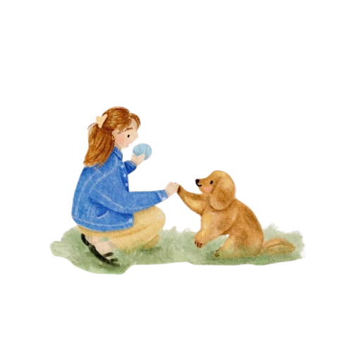

pawlife
pawlife
Alimentos buenos para tu perro

Aunque algunos alimentos de consumo humano son perjudiciales para nuestros compañeros cuadrúpedos, otros pueden resultar muy beneficiosos para su salud. Si quieres complementar la dieta de tu mascota, a continuación te ofrecemos una lista de alimentos buenos para perros que solemos tener en casa.
Te compartimos algunos alimentos buenos para perros que solemos tener en casa
1) Atún, salmón y sardinas
El atún, salmón y las sardinas son alimentos beneficiosos para los perros, ya que contienen proteínas de gran calidad, ácidos grasos Omega 3 y vitaminas. Estos nutrientes refuerzan su sistema inmunitario, facilitan la digestión y ayudan a cuidar la piel y el pelaje de tu compañero cuadrúpedo.
2) Hígado
Además de contener una gran cantidad de hierro, el hígado es rico en vitamina A, B y K. Puedes preparar unas golosinas muy crujientes, sanas y sabrosas para tu mascota cocinando trozos de hígado al horno o a la plancha, evitando toda la humedad.
3) Huevos
Los huevos se encuentran entre las comidas más saludables y completas. Contienen proteínas de calidad y todas las combinaciones esenciales que tu perro necesita, además de una gran variedad de vitaminas y minerales muy beneficiosos para el sistema nervioso.
4) Brócoli
El brócoli es una verdura muy sana y digestiva para los perros. Gracias a su alto conteido de vitaminas y minerales, cuenta con propiedades antioxidantes y depurativas
5) Avena
Gracias a su alto contenido de fibra soluble, la avena es un alimento muy sano para perros que tienen probelas de regularidad intesinal. También es una excelente alternatica para los animales con alegria al trigo.

Salud y Bienestar
Consejos para cuidar la salud física y emocional de tus peludos. Mantén su bienestar con rutinas simples y con mucho amor.
-
 Visitas al veterinario
Visitas al veterinario
-
 Ejercicio y estimulación
Ejercicio y estimulación
-
 Nutrición balanceada
Nutrición balanceada
Educación y Socialización
Aprende comandos básicos y técnicas de socialización para fortalecer la confianza y el vínculo con tus peludos.
Comandos que fortalecen el vínculo
La educación no se trata solo de obediencia, sino de conexión. A través de comandos como ‘siéntate’, ‘quieto’ o ‘ven’, fomentas la comunicación y la confianza mutua. Además, la socialización temprana ayuda a que se adapten mejor a otros animales y personas.
Tips de Educación
-
Usa refuerzos positivos
(premios o caricias) -
Mantén sesiones cortas
y alegres -
Evita los gritos
o castigos -

Repite los comandos
de forma constante y con calma
Afecto e Interacción
- Dedica tiempo de calidad:
Jueguen, paseen y pasen tiempo juntos. El juego fortalece el vínculo y reduce el estrés para ambos. - Establece límites claros:
Los límites y la disciplina deben practicarse con paciencia y amor para generar un ambiente seguro. - Comunícate con tu perro:
Usa una voz cariñosa para fomentar la confianza. Observa sus señales como el movimiento de la cola para entender su estado de ánimo.
- Acércate con calma:
Siéntate o agáchate a su altura para no intimidarlo. Evita el contacto directo en la cara y usa un tono de voz suave. - Respeta su espacio:
No lo obligues a interactuar si no quiere, especialmente si está comiendo o durmiendo. Dale la opción de retirarse siempre que lo necesite. - Entiende su lenguaje corporal:
Una cola levantada y relajada es una señal de que está contento. Si se muestra incómodo o asustado, dale espacio.
Solo debes de aprender a conocerlos, ten paciencia, acercate con cuidado y dales su espacio. Con el tiempo se abrirán y agarrarán confianza. Es muy importante que lo hagas, porque solo así crearás un espacio seguro y lleno de amor para los peludos.